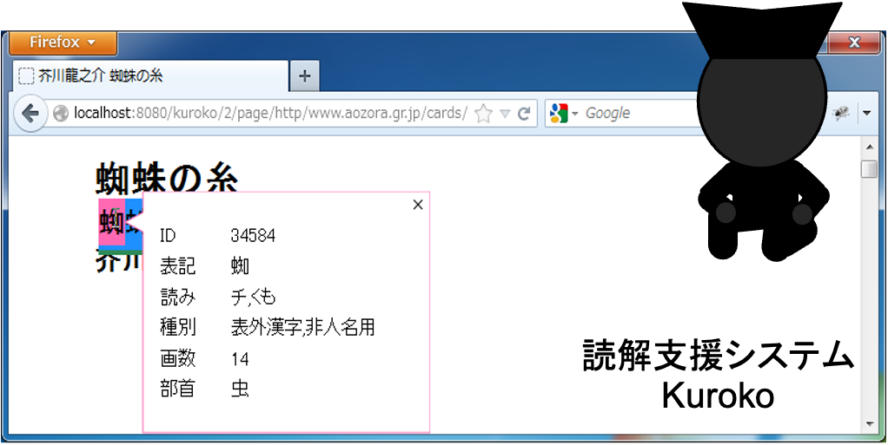
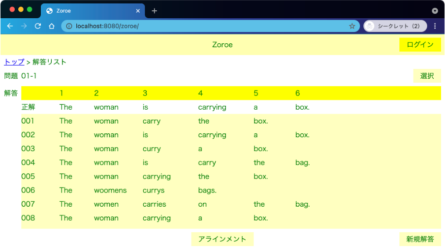
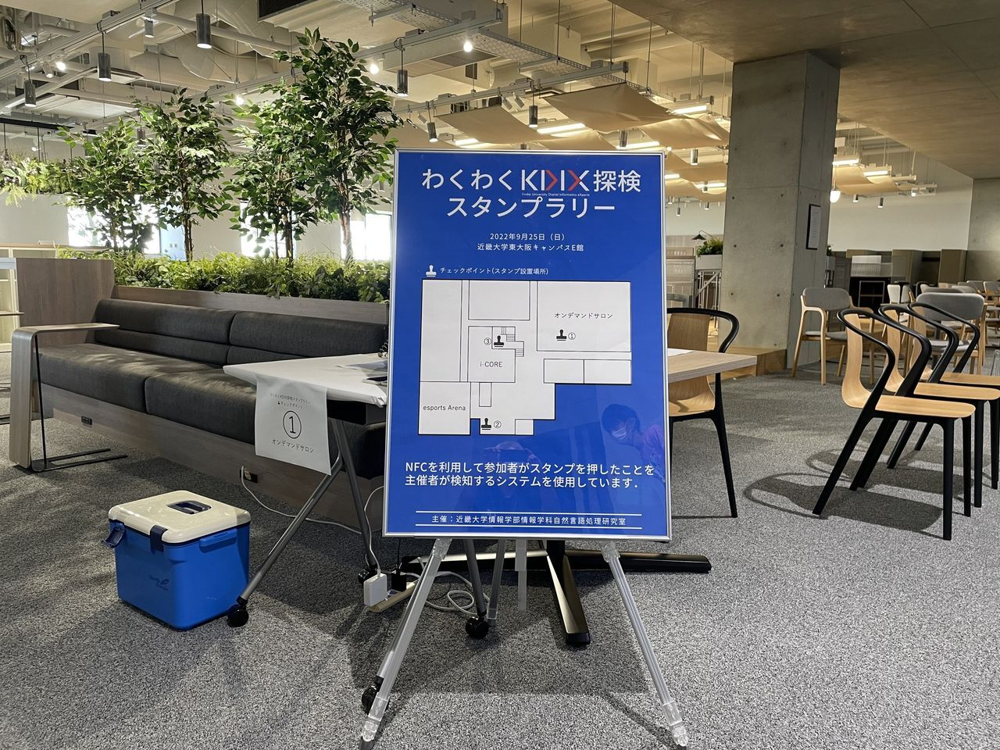
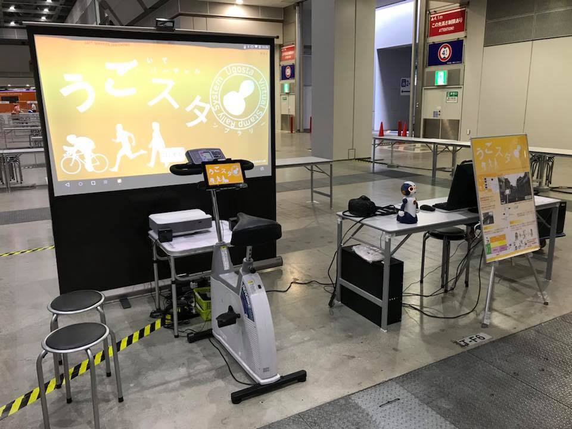

溝渕 昭二
情報学部 情報学科 准教授
#自然言語処理
#健康
#観光
言語、健康、観光に関わる情報システムの開発行っています。最近は、Webコンテンツの読解やアウトプット系の英語学習を支援するシステムや、スタンプラリーの開催するためのシステムを開発しています。
言語・健康・観光に関わる情報システムの開発
Web読解支援システム
Web上の語句に言語情報を付与するシステムです。

英語教育支援システム
ディクテーション等で得られた複数の英文内にある単語を揃えて，誤り等の傾向を確認するシステムです。

リアルスタンプラリー管理システム
スタンプの押印をリアルタイムに検知できるシステムです。

バーチャルスタンプラリーシステム
運動しながら，風景映像を眺めつつ，スタンプラリーに参加できるシステムです。
